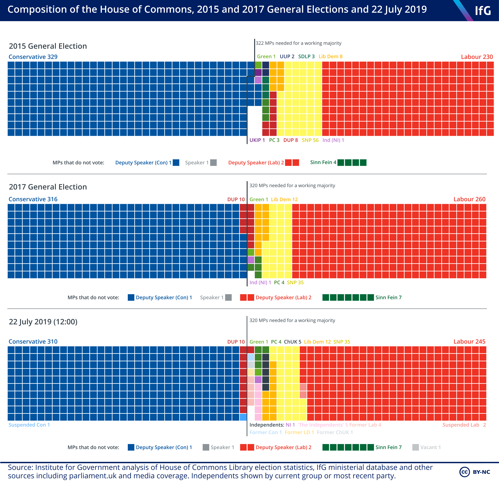
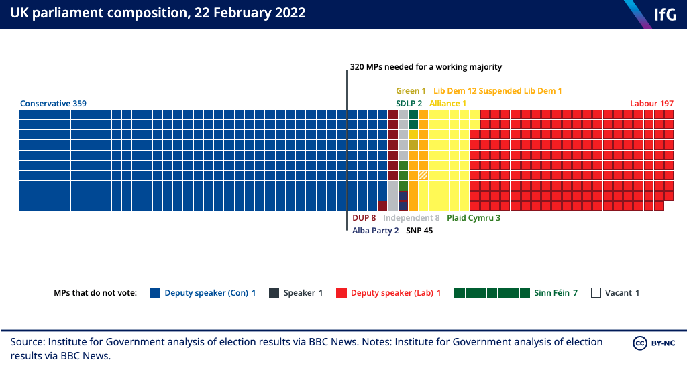
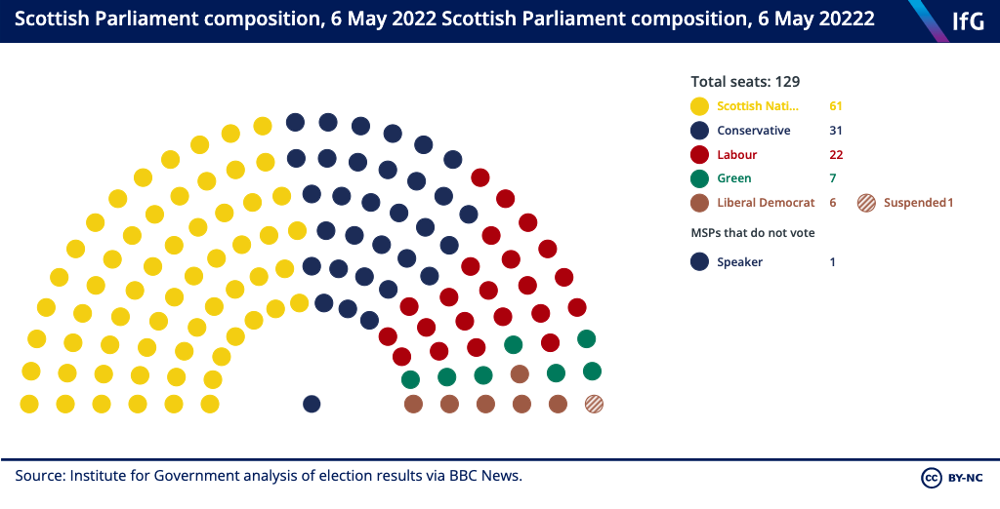
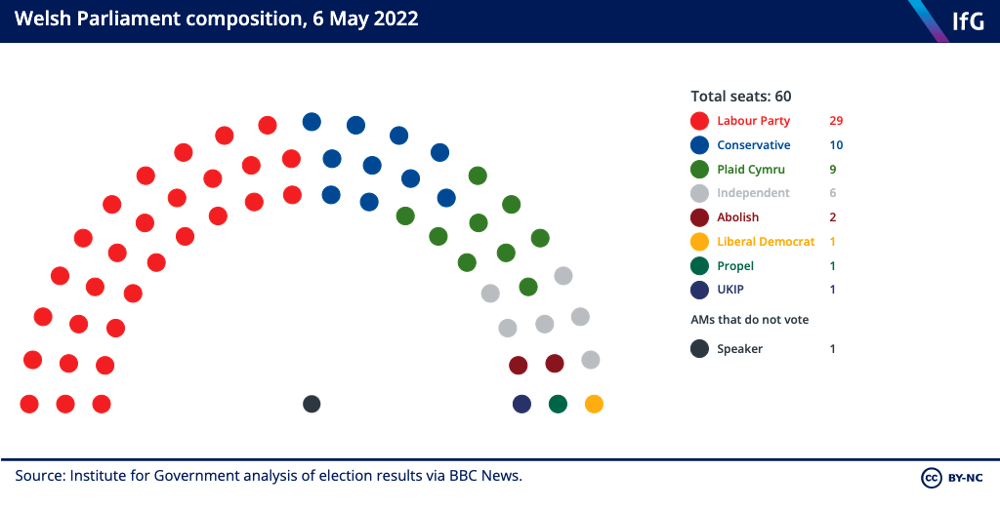
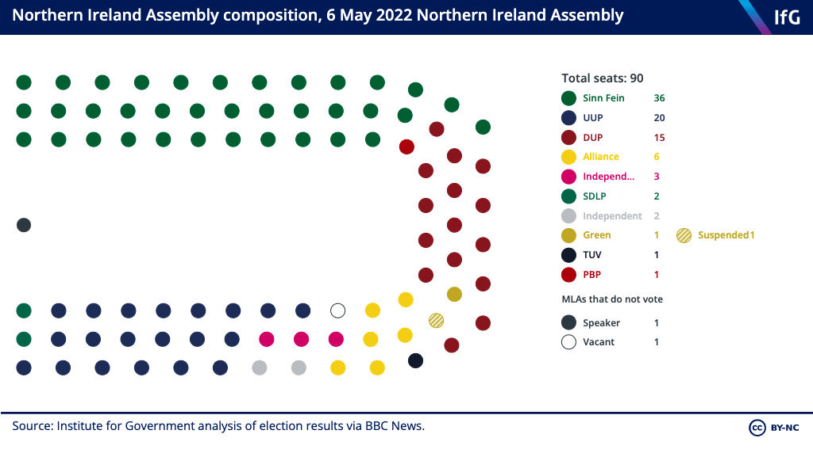

Institute for Government · 2019 · Data visualization
Composition of the House of Commons
One square per seat, coloured by party, so anyone can read the make-up of the House of Commons at a glance and set it beside the last few elections.

One square, one seat
Every seat in the chamber gets a square, coloured by the party that holds it and laid out on a tidy grid. Each chart carries a working-majority marker, so the line between governing and not is something you can see rather than count.
Four legislatures from the same code
The Commons runs to 650 seats; the Scottish, Welsh and Northern Irish chambers are smaller and shaped differently. The grid logic is written once and reads each legislature from data, so a single build renders all four — and refreshing after an election means swapping numbers, not redrawing.
The members who don't vote
A seat chart that shows only party colours quietly lies about who casts a vote. The Speaker, the deputies and abstaining MPs are called out directly on the grid, so the working majority reflects who actually walks through the division lobby.



